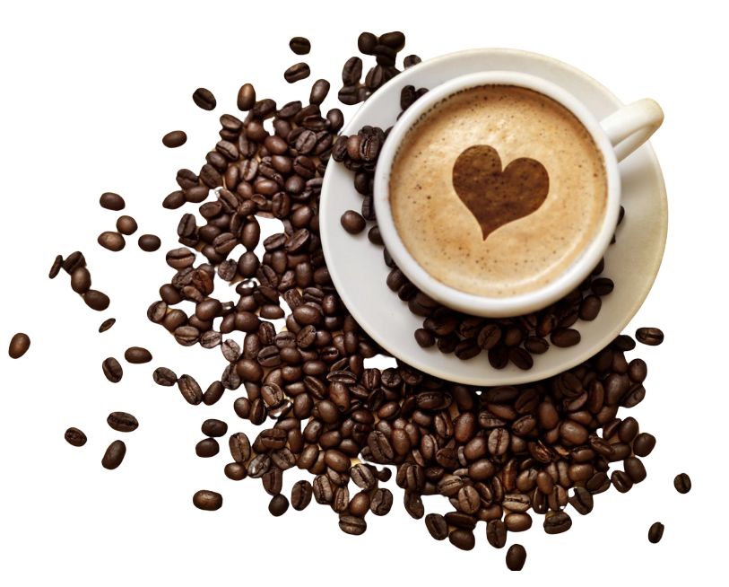

Tudo sobre a Café Brasil
Bem-vindo ao Café Brasil, um espaço criado para celebrar o sabor, a cultura e a tradição do café brasileiro.
Aqui, cada xícara conta uma história, desde os grãos selecionados com carinho até o aroma que envolve o ambiente.
Nosso objetivo é oferecer mais do que um simples café: queremos proporcionar uma experiência única. Além das bebidas,
contamos com uma seleção especial de salgados, doces e opções saudáveis, tudo preparado com ingredientes de alta qualidade
e um toque de cuidado. No Café Brasil, acreditamos que café combina com momentos especiais, conversas sinceras e aquele
tempinho para desacelerar. Seja para uma pausa rápida ou para curtir com amigos, nosso espaço foi pensado para ser
acolhedor e inspirador.
Venha nos visitar e descubra o verdadeiro sabor do Brasil em cada detalhe, estamos esperando por você!
